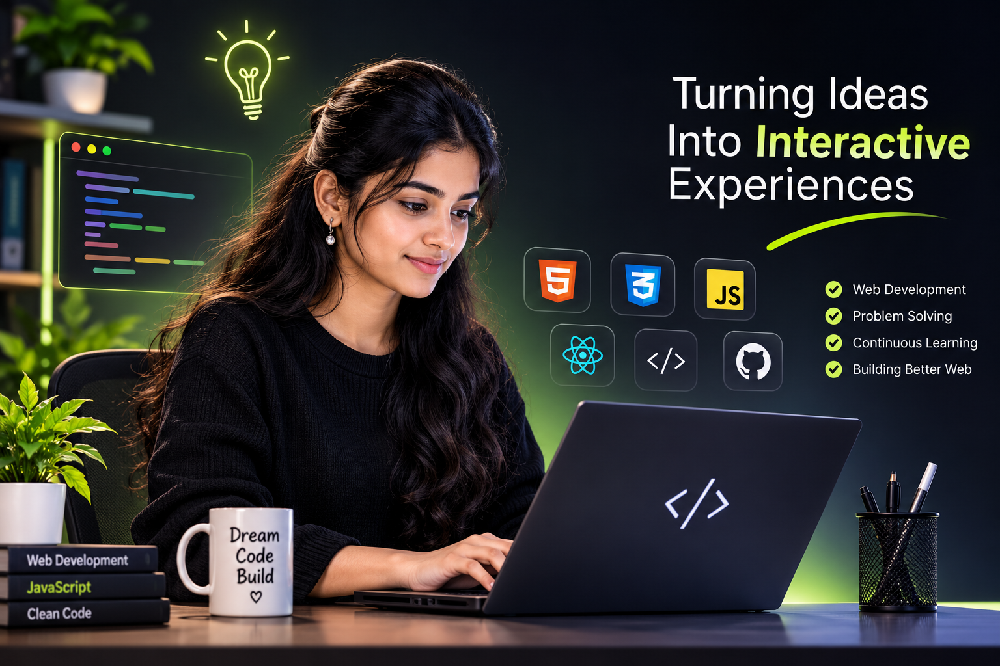

HTML5
Semantic page structure
FRONT-END DEVELOPER · WEB DEVELOPER
I enjoy turning ideas into accessible, user-friendly websites with thoughtful layouts and interactive details.

01 / ABOUT ME
I’m a web developer focused on creating responsive, easy-to-use websites. I care about clear structure, consistent styling, and details that make a website feel polished on every screen.
I’m looking for opportunities to contribute to a team, strengthen my development skills, and build useful digital experiences. I enjoy learning through hands-on projects and feedback.
02 / TOOLKIT
Semantic page structure
Responsive layouts and styling
Interactive UI behaviour
Foundational server-side concepts
Basic knowledge of Java, including OOP concepts, syntax, and problem-solving fundamentals.
Knowledge of MySQL, including database management, SQL queries, and basic CRUD operations.
03 / SELECTED PROJECT IDEAS
These are suggested portfolio projects, not completed work yet. Build them, then replace the descriptions with your actual results.
HTML · CSS · JAVASCRIPT
A responsive web platform designed to help individuals, including homemakers and working professionals, discover suitable side-income opportunities based on their interests, skills, and expected earnings. Users can enter their preferences and salary expectations to receive personalized job recommendations. The platform also redirects users to third-party job portals such as Naukri and Indeed to explore and apply for relevant opportunities.
Project details ↗HTML · CSS · JAVASCRIPT
A clean product listing page with category filters, product cards, and a cart counter.
✓ Plan the week
○ Finish a project
○ Review progress
HTML · CSS · JAVASCRIPT
A small task manager with add, complete, delete, and local session interactions.
04 / SAY HELLO
Open to Front-End Developer and Web Developer opportunities.
sheelaakshitha@gmail.com ↗